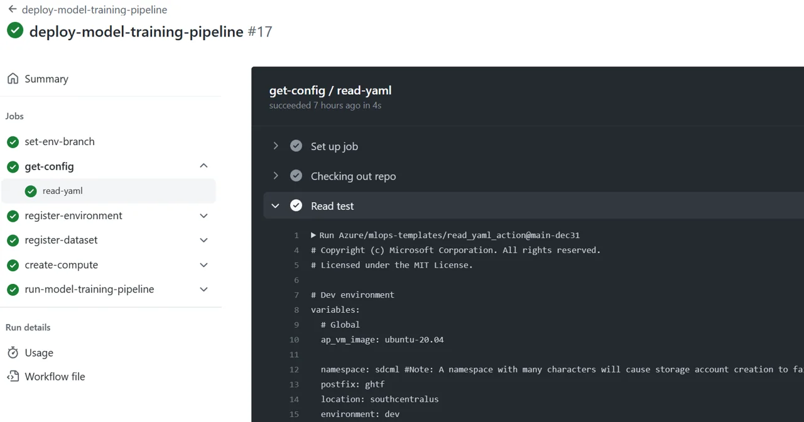

workflow_dispatch 수동 실행 → 환경·데이터셋·컴퓨팅 준비 → Azure ML 학습 파이프라인 실행 (NYC Taxi 요금 회귀 예제)
인증은 OIDC(페더레이션 자격 증명) 권장 · Azure/mlops-v2-gha-demo

개념도가 아닌 실제 동작하는 자동화 워크플로 · learn.microsoft.com/azure/machine-learning/how-to-setup-mlops-github-azure-ml